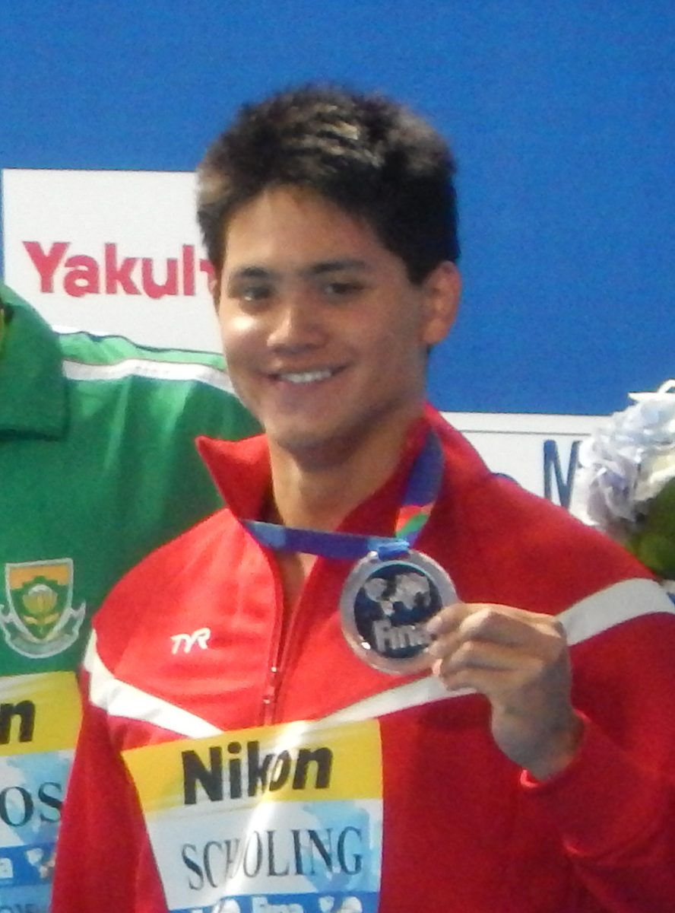

人物故事

贡布神童占·瓦塔纳卡：将柬埔寨足球推向亚洲版图的传奇先驱
从贡布到日本，再到柬超历史射手王，又经历两次前十字韧带撕裂：柬埔寨最高产前锋的故事与他仍在书写的复出之路。

约瑟·斯库林的传奇之路：从儿时梦想到新加坡历史首枚奥运金牌
倾尽家财的家庭付出、赴美深造的严苛历练，以及里约力克菲尔普斯创造的奥运纪录，如何铸就这位新加坡泳坛巨星的非凡人生。

从伦敦饮恨到里约封神：越南首枚奥运金牌得主黄春荣的传奇人生
幼年丧母、重度近视、屡次与奖牌擦肩而过，这位军中神枪手最终为越南射落历史奥运首金。

从糖果厂球场到羽坛传奇：拉差诺·因达农的羽球人生
这位2013年世锦赛冠军战胜贫困、伤病与丧母之痛，铸就东南亚羽坛最具代表性的单打标杆。

曼尼·帕奎奥：征服八个级别的街头拳王传奇
从露宿马尼拉街头的瘦弱少年到跨越四个十年的拳坛神话，这位菲律宾国宝级拳王铸就了无可复制的丰碑。

从初中替补到9秒83：苏炳添的竞速人生与科学重塑
少年时代曾因身高在广东体校屡屡碰壁，25岁毅然推倒重练起跑脚：苏炳添如何打破10秒大关、杀入奥运百米决赛？

改写足球历史的马德拉少年：克里斯蒂亚诺·罗纳尔多的传奇与丰碑
从丰沙尔的铁皮屋顶与少年心脏手术，到五夺欧冠与超980粒职业生涯进球

从达吉斯坦群山到29胜0负传奇：哈比卜·努尔马戈梅多夫的完美综合格斗之路
在父亲阿卜杜勒马纳普的毕生指引下，这位轻量级霸主统治了UFC八角笼，并在巅峰之际兑现承诺挂拳退役。

林丹：“超级丹”如何包揽羽毛球所有重大冠军
他在首届奥运会首轮出局，之后在北京和伦敦两夺金牌，五获世锦赛冠军，并集齐羽毛球全部九项重大赛事冠军。

埃·普通：从戈公走出的高棉拳代表人物
他曾在多个级别夺得全国冠军，在金边击败外国对手，免费教流浪儿童练拳，如今执教柬埔寨的新一代冠军。

马龙：从鞍山少年到六枚奥运金牌
他曾无缘2012年伦敦奥运会男单阵容，此后蝉联奥运男单冠军，并实现世乒赛男单三连冠。
玛丽亚·莎拉波娃：从冰冷起点到网坛不朽
回溯这位俄罗斯传奇的非凡征程：年少温网一战成冠、实现全满贯伟业，并在网球历史上刻下永恒印记。

索·西芙美：用双脚踢出柬埔寨的跆拳道版图
从金边安静的童年到仁川亚运会的历史性金牌，这位先锋级别的跆拳道冠军彻底改变了她祖国的体育格局。

不羁的拓荒者：李娜重塑亚洲网球的传奇之路
从江城的锥心之痛，到巴黎与墨尔本的法网与澳网加冕，这位中国先锋巨星用独立意志开辟了历史。

从舍伍德康顿的红土到世界田径之巅：博尔特传奇人生
回溯这位牙买加短跑名将的传奇足迹：他重新定义了人类的速度极限，克服了早期的身体伤病，在世界体坛留下了永不磨灭的印记。

心有长城的巨人：姚明的传奇与重担
从上海的街头到休斯敦的球馆穹顶，姚明不只是一名篮球运动员——他是连接一整个大洲的桥梁。